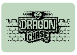

|
Pile-Up
Don't let the bricklayer build up the wall! You
are competing against a crazy guy who is throwing piles of bricks
at you. The only way to prevent him building the wall is to arrange
the pieces so that entire lines disappear. But the bricklayer never
gets tired and throws bricks faster and faster..
A
game in the "Oldies but goodies" category.
Supported
technologies : Exen |
 |
Wata
Raider
It's
a long way to the oasis! That's
surely what Wata the Vizir thinks when he is dodging all the traps
and wicked mummies on his way. Hopefully, he can use his sword to
fight them off and to gain some free time to pick up objects in the jars.
A platform game with an oriental taste.
Supported
technologies : Exen
|
|
3D
Maze
Don't get lost and stay in control, it's only
a game! Parts of a puzzle are scattered in the
chests you can find in the labyrinth. But have you already found the
keys to open the chests?
A fantastic 3D game that will challenge your navigation skills.
Supported
technologies : Exen
|
|
Jungle
2 snakes are better than one! Move
your snake to eat the apples without touching your tail or
the other snake!
A crazy game where ability and speed are required.
Supported
technologies : Exen
|
|
Pharo
Welcome
to a fantastic world where you are the hero!
Save the world from an invasion by the Army of Darkness. A devil and
its henchmen have besieged a lighthouse and you must find a way to
stop them and to switch off the light in the tower.
Pharo is the first game of In-Fusio's Adventure range, a sequel of
complete non-linear Adventure games where players will always have
the choice between different ways to progress in the story. Each new
adventure game will place players in a different context (fantastic,
history, cartoon, cultural, etc.)
Supported technologies : WAP |
|
Katch'em
The first game based on location technology.
It's Innovative, it's a Community massive multiplayer
game, it's a Federation game for any player, any age, It's Easy and
Accessible, it's a tribal game, IT IS KATCH'EM...
Supported
technologies : WAP |
|
Blackjack
A
card game that requires self control.
When you subscribe to the game, you will receive an amount of dummy money
is use for betting against the bank. Never mind if you run out of
money, In-Fusio registers your highest score and organises contests between
players.
Supported technologies : WAP |
|
Football
Fans
An on-line derivative of the very successful
Fantasy League games, so popular in the UK and now invading the rest of the
world. Be the manager of your own football team:
select a squad of real football players, set up the team before fixtures
and gain points according the performance of each of your players in
real life. Participate in a global league or make up your own private
league to play with your colleagues and friends. Of course, prizes
are rewarded to the best managers !
Supported
technologies : WAP and IVR |
 |
Crazypet
Help this nice little mouse to escape
from the cats and eat the maximum number of cheese pieces.
A tip: magic pills are spread around the labyrinth allowing the mouse
to eat the cats, but only for a while... You can buy new levels
of the game, register your highest scores and win prizes if you're the
best !
Supported
technologies : connected (SMS) embedded
game
|
|
In
Spirit
The 1st worldwide multiplayer game.
This is year 3038. The last human beings have left their physical
body to an ethereal-envelop called "Spirits".
In Spirit is a role playing combat game that offers players from all
over the world the opportunity to fight each other while connected.
In Spirit has already been launched by operators in Germany, Australia
and Hong Kong.
Supported
technologies : WAP |
 |
Jackpot
Can you ear the sound of the slot
machines… Ever been to the Las Vegas casinos?
Never mind. Get ready to launch your own slot machine on your mobile
and win the jackpot…
In-Fusio registers your score and organises contests with prizes
between players.
Supported technologies: WAP
|
|
Push
Place the ice-cubes in their final position.
Not as easy as it seems at first glance when you discover that they can only be pushed push and that the ground is icy here and there. A terrific
puzzle game, especially at level 47. The minimum moves the penguin
makes, the maximum points you get. You can buy new game levels,
register your highest scores and win prizes if you're the best!
Supported
technologies : connected (SMS) embedded
game
|
|
Quizz
Simple and accessible to a large audience,
Quizz is the best way to entertain a large number of subscribers.
Questions must be answered in different categories,
prizes are awarded to the best competitors. The questions are regularly updated by In-Fusio.
Supported
technologies : WAP
|
|
Reshape
The famous puzzle game.
Are you smart enough to re-arrange the icons as shown on the left
side of the screen ? Don't take too long, time is limited...
Supported
technologies : connected (SMS) embedded
game
|
|
Tac-in
Can you reconstruct the puzzle.
The player moves a white square which in turn pushes the other pieces of
the picture. There are several levels of difficulty adapted to each
player.
Supported technologies: WAP
|
 |
Colormind
Crack the code. The aim of
this game is to discover the combination of a secret code composed
of 4 symbols chosen at random among 6. For each attempt, the player
receives a tip on correct symbols and positions. With 2 levels of difficulty,
beginners as well as confirmed players will discover the fun of
this famous game.
Supported technologies: WAP
|
 |
Matches
Match
Ready to brainstorm? 23 matches are
placed on the screen of your mobile. Each player take turns taking
either one, two or three matches. The winner is the one who take
the last matches. Ready to brainstorm…
Supported technologies: WAP
|
|
Recto
Verso
A minute to learn. A lifetime to
master! Recto Verso (face off) is a draughtboard game with
reversible pieces. Each player puts in turns one piece on the draughtboard
and returns opponents’ pieces placed between his piece and
his other pieces already present on the draughtboard.
You win when you have the highest number of your pieces on the board
at the end of the game.
Supported technologies: WAP
|
|
P4
The famous four-in-a-row game. The
aim of this famous game is to align 4 of your coloured discs in a vertically framework with 7x6 sites.
Players use pawns of colour that they make slip the high of the
framework, and fall to put in place. The winner is the first to
align 4 paws of its colour horizontally, vertically or in diagonal.
Supported technologies: WAP
|
 |
Yam’s
A well-known dice game. The goal
is to score by rolling 5 dice. As it is a gambling game, the player
receives an amount of dummy points (a kitty) and place a bet before playing.
Be the best and In-Fusio will register your score and organise contests
with prizes between players.
Supported technologies: WAP
|
|
Poker
Don't bluff your mobile!
As with our Blackjack game, when you subscribe to this game, you receive
a kitty and can play the most famous casino game as many times as you want. Are you a real player? Register your best score and enter In-Fusio contests.
Supported technologies: WAP
|
|  |
Dragon
Chase
In a 3D labyrinth, find a sword
to kill the dragon. You must have an excellent sense of direction
so that you do not get lost, or come across the dragon before you
have found the sword…
Supported technologies: WAP
|